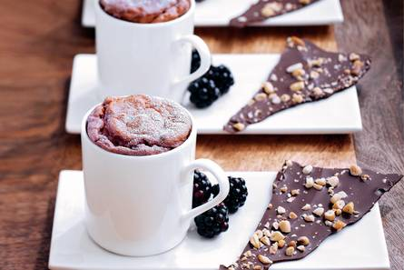

De soufflé die uit de klassieke Franse keuken komt.
Ingrediënten
1 doosjevol bramen (diepvries,250g)
1 tablet pure chocolade
2 el pijnboompitten (geroosterd en fijngehakt)
25 g boter
25 g bloem
150 ml volle melk
4 eiren (gesplitst)
150 g suiker
poedersuiker (om te bestrooien)
Bereidingswijze
Verwarm de oven voor op 200 °C. Laat de bramen ontdooien. Houd 1 hand bramen apart en pureer de rest met de staafmixer. Zeef de puree. Smelt de chocolade au bain-marie of in de magnetron. Strijk de chocolade uit op het bakpapier tot een plak van 2 mm dik en strooi de pijnboompitten erover. Laat in de koelkast opstijven. Smelt de boter op laag vuur.
Bak de bloem 1 min. zonder te kleuren. Giet de melk erbij en klop in 1 min. glad. Haal de pan van het vuur en voeg de bramenpuree toe. Roer de losgeklopte eidooiers erdoor. Klop de eiwitten niet helemaal stijf. Voeg de suiker toe en klop daarna de eiwitten stijf. Spatel door het bramenmengsel. Verdeel over de vormen, strijk de bovenkant glad en bak de soufflés in de voorverwarmde oven in 15-20 min. lichtbruin. Laat de deur van de oven dicht.
Breek de chocolade tot schotsen. Neem de soufflés voorzichtig uit de oven en bestrooi met poedersuiker. Serveer direct met de chocoladeschotsen.

TipDe soufflé komt uit de klassieke Franse keuken: souffleren betekent rijzen. Wilt u dat de soufflé extra mooi en gelijkmatig rijst, maak dan langs de rand van de vorm met een natte vinger een gootje in het mengsel. Serveer de soufflé direct en zorg dat de weg tot de tafel zo kort mogelijk en tochtvrij is. Zodra de warme lucht in de soufflé afkoelt, zakt deze namelijk in. Maar ook dan is de soufflé nog heel smakelijk.